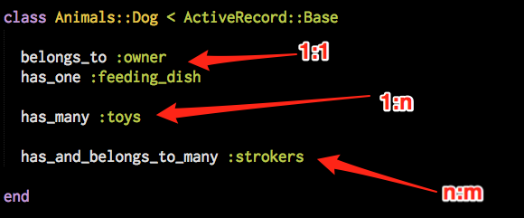
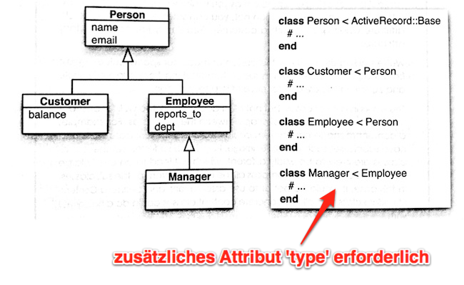
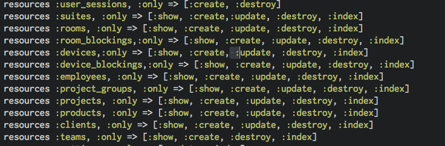
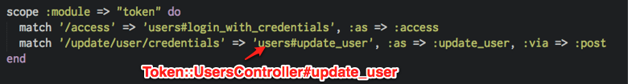
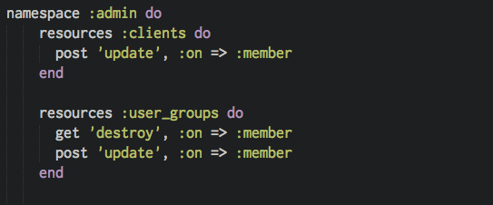
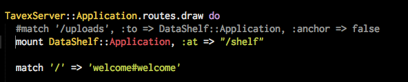
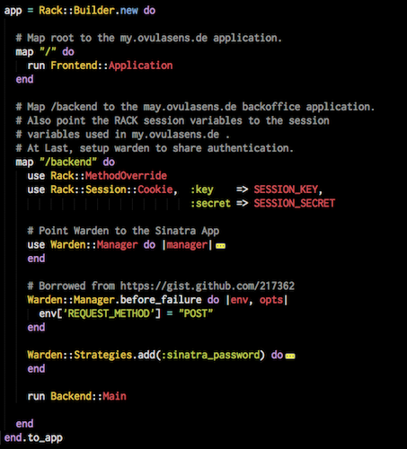

Rails
Rails
.. is a web framework
Rails
- Don't Repeat Yourself
- Convention over Configuration
- Keep it Simple Stupid
Rails
- Datenbankagnostisch
- ORM an Board
- Templates
- RESTful
Rails
MVC
Model
- Verantwortlich für Daten und "Verhalten"
- (data and behaviour)
- tweets,authors,comments
View
- Anzeige der Informationen
- HTML, XML, JSON
- Beliebige MIME-Types (csv?)
Controller
- Schnittstelle zwischen Model & View
- Slim controller, fat model
- Mixins!
Asset Pipeline
- Coffeescript,less,sass,scss, erb
- Manifest files zum Laden von js/css
- JavaScript Kompression (uglifier.js)
Asset Pipeline
ActiveRecord
An object that wraps a row in a database.
ActiveRecord - Konventionen
- in app/models/**/*
- Dateiname gleich Klassenname
- Klassenname Singular der Tabelle
- Verzeichnisse sind Module
ActiveRecord - Konventionen

ActiveRecord
- Primärschlüssel ist id
- set_primary_key
- Delegieren von Attributen in Beziehungen
- attr_accessible
ActiveRecord - Datenbankkonzepte

ActiveRecord - STI

ActiveModel
- extrahiert aus ActiveRecord
- für jede Klasse verwendbar
ActiveModel - Validations
- presence
- uniqueness
- length
- inclusion
- exclusion
- ...custom...
Migrations
- Versionsverwaltung für Datenbankschemas
- Austausch von Versionen (Sprünge)
- Ruby!
ActionController
- Implementiert die 'actions' auf denen die URL's 'zeigen'
- Mit namespaces nutzbar
- DRY - Filter (around, before, after)
- respond_to & respond_with
{kind=link}
ActiveDispatch (oder auch ‘Routes’)
- Pretty URLs
- Bindung von Controller actions an URLs
- resources, namespaces, scopes
Routes

Routes


ActionView
- Zugang zu @variables
- ERB, HAML, SLIM
ActionView ERB
ORM ….
- Mongoid
- MongoMapper
- DataMapper
The ritter app
Mixins
- ActiveSupport::Concern
- in lib/
- skinny controller, fat model
- thematisch aufteilen!
Webservice und Middleware
Rails is Rack based.
Sinatra is Rack based.
Rails + Sinatra = Awesome
Middleware
Sinatra als Middleware

Rails + Sinatra Side-by-Side

Deployment
- Capistrano
- Unicorn/Nginx
- Passenger
- Torquebox (für JRuby on Rails)